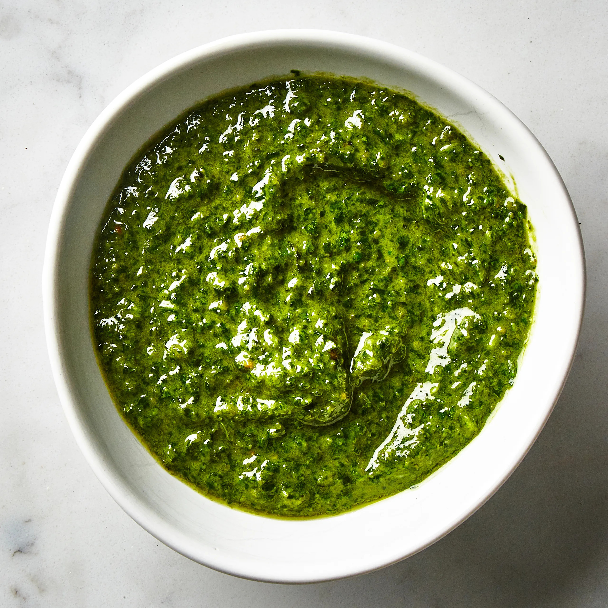

Classic Pesto

Pesto alla genovese
Traditional pesto is a blend of fresh basil, garlic, pine nuts, extra-virgin olive oil, and Parmesan cheese.
Ingredients
- Fresh basil
- Extra virgin olive oil
- Garlic cloves
- Pine nuts
- Freshly grated parmesan cheese
- Coarse salt
- Butter
- Dry pasta
Steps
- Add the garlic cloves with a tiny pinch of salt to the mortar. Using the pestle, crush the garlic into a rough paste.
- Add the pine nuts and grind with the garlic into a smooth paste.
- Add the basil leaves with another pinch of salt. Using the pestle with a rotary movement, grind all the ingredients against the side of the mortar. When they have been ground into a paste, add both the grated parm and romano cheeses and grind them evenly into the mixture.
- Set the pestle aside and grab a spoon or spatula. Add the olive oil in a very thin stream, beating it into the mixture with the spoon. When all the oil has been incorporated, beat in the butter with the spoon, distributing it evenly.
- To serve with pasta, reserve a half cup of the pasta water and transfer the cooked pasta to a large bowl. Spoon the pesto over top with a couple of spoon fulls of the starchy pasta water to dilute and create a cohesive sauce. Serve with more parm, fresh basil, or diced fresh tomatoes.